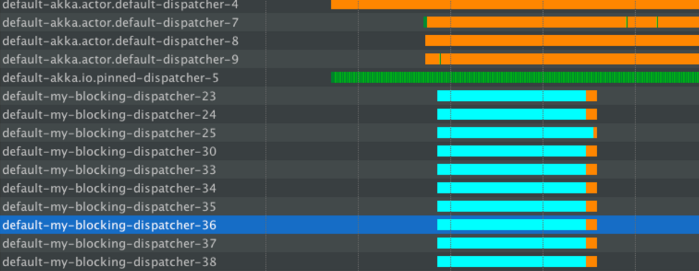

Dispatchers
You are viewing the documentation for the new actor APIs, to view the Akka Classic documentation, see Classic Dispatchers.
Dependency
Dispatchers are part of core Akka, which means that they are part of the akka-actor dependency. This page describes how to use dispatchers with akka-actor-typed, which has dependency:
- sbt
val AkkaVersion = "2.7.0" libraryDependencies += "com.typesafe.akka" %% "akka-actor-typed" % AkkaVersion- Maven
<properties> <scala.binary.version>2.13</scala.binary.version> </properties> <dependencyManagement> <dependencies> <dependency> <groupId>com.typesafe.akka</groupId> <artifactId>akka-bom_${scala.binary.version}</artifactId> <version>2.7.0</version> <type>pom</type> <scope>import</scope> </dependency> </dependencies> </dependencyManagement> <dependencies> <dependency> <groupId>com.typesafe.akka</groupId> <artifactId>akka-actor-typed_${scala.binary.version}</artifactId> </dependency> </dependencies>- Gradle
def versions = [ ScalaBinary: "2.13" ] dependencies { implementation platform("com.typesafe.akka:akka-bom_${versions.ScalaBinary}:2.7.0") implementation "com.typesafe.akka:akka-actor-typed_${versions.ScalaBinary}" }
Introduction
An Akka MessageDispatcher is what makes Akka Actors “tick”, it is the engine of the machine so to speak. All MessageDispatcher implementations are also an ExecutionContextExecutor, which means that they can be used to execute arbitrary code, for instance FuturesCompletableFutures.
Default dispatcher
Every ActorSystem will have a default dispatcher that will be used in case nothing else is configured for an Actor. The default dispatcher can be configured, and is by default a Dispatcher with the configured akka.actor.default-dispatcher.executor. If no executor is selected a “fork-join-executor” is selected, which gives excellent performance in most cases.
Internal dispatcher
To protect the internal Actors that are spawned by the various Akka modules, a separate internal dispatcher is used by default. The internal dispatcher can be tuned in a fine-grained way with the setting akka.actor.internal-dispatcher, it can also be replaced by another dispatcher by making akka.actor.internal-dispatcher an alias.
Looking up a Dispatcher
Dispatchers implement the ExecutionContextExecutor interface and can thus be used to run FutureCompletableFuture invocations etc.
- Scala
-
source
// for use with Futures, Scheduler, etc. import akka.actor.typed.DispatcherSelector implicit val executionContext = context.system.dispatchers.lookup(DispatcherSelector.fromConfig("my-dispatcher")) - Java
-
source
// this is scala.concurrent.ExecutionContextExecutor, which implements // both scala.concurrent.ExecutionContext (for use with Futures, Scheduler, etc.) // and java.util.concurrent.Executor (for use with CompletableFuture etc.) final ExecutionContextExecutor ex = system.dispatchers().lookup(DispatcherSelector.fromConfig("my-dispatcher"));
Selecting a dispatcher
A default dispatcher is used for all actors that are spawned without specifying a custom dispatcher. This is suitable for all actors that don’t block. Blocking in actors needs to be carefully managed, more details here.
To select a dispatcher use DispatcherSelector to create a Props instance for spawning your actor:
- Scala
-
source
import akka.actor.typed.DispatcherSelector context.spawn(yourBehavior, "DefaultDispatcher") context.spawn(yourBehavior, "ExplicitDefaultDispatcher", DispatcherSelector.default()) context.spawn(yourBehavior, "BlockingDispatcher", DispatcherSelector.blocking()) context.spawn(yourBehavior, "ParentDispatcher", DispatcherSelector.sameAsParent()) context.spawn(yourBehavior, "DispatcherFromConfig", DispatcherSelector.fromConfig("your-dispatcher")) - Java
-
source
context.spawn(behavior, "DefaultDispatcher"); context.spawn(behavior, "ExplicitDefaultDispatcher", DispatcherSelector.defaultDispatcher()); context.spawn(behavior, "BlockingDispatcher", DispatcherSelector.blocking()); context.spawn(behavior, "ParentDispatcher", DispatcherSelector.sameAsParent()); context.spawn( behavior, "DispatcherFromConfig", DispatcherSelector.fromConfig("your-dispatcher"));
DispatcherSelector has a few convenience methods:
DispatcherSelector.defaultDispatcherSelector.defaultDispatcherto look up the default dispatcherDispatcherSelector.blockingcan be used to execute actors that block e.g. a legacy database API that does not supportFutureCompletionStagesDispatcherSelector.sameAsParentto use the same dispatcher as the parent actor
The final example shows how to load a custom dispatcher from configuration and relies on this being in your application.conf:
sourceyour-dispatcher {
type = Dispatcher
executor = "thread-pool-executor"
thread-pool-executor {
fixed-pool-size = 32
}
throughput = 1
}
Types of dispatchers
There are 2 different types of message dispatchers:
-
Dispatcher
This is an event-based dispatcher that binds a set of Actors to a thread pool. The default dispatcher is used if no other is specified.
- Shareability: Unlimited
- Mailboxes: Any, creates one per Actor
- Use cases: Default dispatcher, Bulkheading
- Driven by:
java.util.concurrent.ExecutorService. Specify using “executor” using “fork-join-executor”, “thread-pool-executor” or the fully-qualified class name of anakka.dispatcher.ExecutorServiceConfiguratorimplementation.
-
PinnedDispatcher
This dispatcher dedicates a unique thread for each actor using it; i.e. each actor will have its own thread pool with only one thread in the pool.
- Shareability: None
- Mailboxes: Any, creates one per Actor
- Use cases: Bulkheading
- Driven by: Any
akka.dispatch.ThreadPoolExecutorConfigurator. By default a “thread-pool-executor”.
Here is an example configuration of a Fork Join Pool dispatcher:
sourcemy-dispatcher {
# Dispatcher is the name of the event-based dispatcher
type = Dispatcher
# What kind of ExecutionService to use
executor = "fork-join-executor"
# Configuration for the fork join pool
fork-join-executor {
# Min number of threads to cap factor-based parallelism number to
parallelism-min = 2
# Parallelism (threads) ... ceil(available processors * factor)
parallelism-factor = 2.0
# Max number of threads to cap factor-based parallelism number to
parallelism-max = 10
}
# Throughput defines the maximum number of messages to be
# processed per actor before the thread jumps to the next actor.
# Set to 1 for as fair as possible.
throughput = 100
}
For more configuration options, see the More dispatcher configuration examples section and the default-dispatcher section of the configuration.
The parallelism-max for the fork-join-executor does not set the upper bound on the total number of threads allocated by the ForkJoinPool. It is a setting specifically talking about the number of hot threads the pool will keep running in order to reduce the latency of handling a new incoming task. You can read more about parallelism in the JDK’s ForkJoinPool documentation.
The thread-pool-executor dispatcher is implemented using by a java.util.concurrent.ThreadPoolExecutor. You can read more about it in the JDK’s ThreadPoolExecutor documentation.
Dispatcher aliases
When a dispatcher is looked up, and the given setting contains a string rather than a dispatcher config block, the lookup will treat it as an alias, and follow that string to an alternate location for a dispatcher config. If the dispatcher config is referenced both through an alias and through the absolute path only one dispatcher will be used and shared among the two ids.
Example: configuring internal-dispatcher to be an alias for default-dispatcher:
akka.actor.internal-dispatcher = akka.actor.default-dispatcher
Blocking Needs Careful Management
In some cases it is unavoidable to do blocking operations, i.e. to put a thread to sleep for an indeterminate time, waiting for an external event to occur. Examples are legacy RDBMS drivers or messaging APIs, and the underlying reason is typically that (network) I/O occurs under the covers.
The Managing Blocking in Akka video explains why it is bad to block inside an actor, and how you can use custom dispatchers to manage blocking when you cannot avoid it.
Problem: Blocking on default dispatcher
Simply adding blocking calls to your actor message processing like this is problematic:
- Scala
-
source
import akka.actor.typed.Behavior import akka.actor.typed.scaladsl.Behaviors object BlockingActor { def apply(): Behavior[Int] = Behaviors.receiveMessage { i => // DO NOT DO THIS HERE: this is an example of incorrect code, // better alternatives are described further on. //block for 5 seconds, representing blocking I/O, etc Thread.sleep(5000) println(s"Blocking operation finished: $i") Behaviors.same } } - Java
-
source
import akka.actor.typed.*; import akka.actor.typed.javadsl.*; public class BlockingActor extends AbstractBehavior<Integer> { public static Behavior<Integer> create() { return Behaviors.setup(BlockingActor::new); } private BlockingActor(ActorContext<Integer> context) { super(context); } @Override public Receive<Integer> createReceive() { return newReceiveBuilder() .onMessage( Integer.class, i -> { // DO NOT DO THIS HERE: this is an example of incorrect code, // better alternatives are described further on. // block for 5 seconds, representing blocking I/O, etc Thread.sleep(5000); System.out.println("Blocking operation finished: " + i); return Behaviors.same(); }) .build(); } }
Without any further configuration the default dispatcher runs this actor along with all other actors. This is very efficient when all actor message processing is non-blocking. When all of the available threads are blocked, however, then all the actors on the same dispatcher will starve for threads and will not be able to process incoming messages.
Blocking APIs should also be avoided if possible. Try to find or build Reactive APIs, such that blocking is minimised, or moved over to dedicated dispatchers.
Often when integrating with existing libraries or systems it is not possible to avoid blocking APIs. The following solution explains how to handle blocking operations properly.
Note that the same hints apply to managing blocking operations anywhere in Akka, including Streams, HTTP and other reactive libraries built on top of it.
To demonstrate this problem, let’s set up an application with the above BlockingActor and the following PrintActor:
- Scala
-
source
object PrintActor { def apply(): Behavior[Integer] = Behaviors.receiveMessage { i => println(s"PrintActor: $i") Behaviors.same } } - Java
-
source
class PrintActor extends AbstractBehavior<Integer> { public static Behavior<Integer> create() { return Behaviors.setup(PrintActor::new); } private PrintActor(ActorContext<Integer> context) { super(context); } @Override public Receive<Integer> createReceive() { return newReceiveBuilder() .onMessage( Integer.class, i -> { System.out.println("PrintActor: " + i); return Behaviors.same(); }) .build(); } }
- Scala
-
source
val root = Behaviors.setup[Nothing] { context => for (i <- 1 to 100) { context.spawn(BlockingFutureActor(), s"futureActor-$i") ! i context.spawn(PrintActor(), s"printActor-$i") ! i } Behaviors.empty } val system = ActorSystem[Nothing](root, "BlockingDispatcherSample") - Java
-
source
Behavior<Void> root = Behaviors.setup( context -> { for (int i = 0; i < 100; i++) { context.spawn(BlockingActor.create(), "BlockingActor-" + i).tell(i); context.spawn(PrintActor.create(), "PrintActor-" + i).tell(i); } return Behaviors.ignore(); });
Here the app is sending 100 messages to BlockingActors and PrintActors and large numbers of akka.actor.default-dispatcher threads are handling requests. When you run the above code, you will likely to see the entire application gets stuck somewhere like this:
> PrintActor: 44
> PrintActor: 45
PrintActor is considered non-blocking, however it is not able to proceed with handling the remaining messages, since all the threads are occupied and blocked by the other blocking actors - thus leading to thread starvation.
In the thread state diagrams below the colours have the following meaning:
- Turquoise - Sleeping state
- Orange - Waiting state
- Green - Runnable state
The thread information was recorded using the YourKit profiler, however any good JVM profiler has this feature (including the free and bundled with the Oracle JDK VisualVM, as well as Java Mission Control).
The orange portion of the thread shows that it is idle. Idle threads are fine - they’re ready to accept new work. However, a large number of turquoise (blocked, or sleeping as in our example) threads leads to thread starvation.
If you own a Lightbend subscription you can use the commercial Thread Starvation Detector which will issue warning log statements if it detects any of your dispatchers suffering from starvation and other. It is a helpful first step to identify the problem is occurring in a production system, and then you can apply the proposed solutions as explained below.

In the above example we put the code under load by sending hundreds of messages to blocking actors which causes threads of the default dispatcher to be blocked. The fork join pool based dispatcher in Akka then attempts to compensate for this blocking by adding more threads to the pool (default-akka.actor.default-dispatcher 18,19,20,...). This however is not able to help if those too will immediately get blocked, and eventually the blocking operations will dominate the entire dispatcher.
In essence, the Thread.sleep operation has dominated all threads and caused anything executing on the default dispatcher to starve for resources (including any actor that you have not configured an explicit dispatcher for).
Non-solution: Wrapping in a Future
When facing this, you may be tempted to wrap the blocking call inside a Future and work with that instead, but this strategy is too simplistic: you are quite likely to find bottlenecks or run out of memory or threads when the application runs under increased load.
- Scala
-
source
object BlockingFutureActor { def apply(): Behavior[Int] = Behaviors.setup { context => implicit val executionContext: ExecutionContext = context.executionContext Behaviors.receiveMessage { i => triggerFutureBlockingOperation(i) Behaviors.same } } def triggerFutureBlockingOperation(i: Int)(implicit ec: ExecutionContext): Future[Unit] = { println(s"Calling blocking Future: $i") Future { Thread.sleep(5000) //block for 5 seconds println(s"Blocking future finished $i") } } }
The key problematic line here is this:
implicit val executionContext: ExecutionContext = context.executionContext
Using context.executionContext as the dispatcher on which the blocking Future executes can still be a problem, since this dispatcher is by default used for all other actor processing unless you set up a separate dispatcher for the actor.
Solution: Dedicated dispatcher for blocking operations
An efficient method of isolating the blocking behavior, such that it does not impact the rest of the system, is to prepare and use a dedicated dispatcher for all those blocking operations. This technique is often referred to as “bulk-heading” or simply “isolating blocking”.
In application.conf, the dispatcher dedicated to blocking behavior should be configured as follows:
sourcemy-blocking-dispatcher {
type = Dispatcher
executor = "thread-pool-executor"
thread-pool-executor {
fixed-pool-size = 16
}
throughput = 1
}
A thread-pool-executor based dispatcher allows us to limit the number of threads it will host, and this way we gain tight control over the maximum number of blocked threads the system may use.
The exact size should be fine tuned depending on the workload you’re expecting to run on this dispatcher.
Whenever blocking has to be done, use the above configured dispatcher instead of the default one:
- Scala
-
source
object SeparateDispatcherFutureActor { def apply(): Behavior[Int] = Behaviors.setup { context => implicit val executionContext: ExecutionContext = context.system.dispatchers.lookup(DispatcherSelector.fromConfig("my-blocking-dispatcher")) Behaviors.receiveMessage { i => triggerFutureBlockingOperation(i) Behaviors.same } } def triggerFutureBlockingOperation(i: Int)(implicit ec: ExecutionContext): Future[Unit] = { println(s"Calling blocking Future: $i") Future { Thread.sleep(5000) //block for 5 seconds println(s"Blocking future finished $i") } } } - Java
-
source
class SeparateDispatcherFutureActor extends AbstractBehavior<Integer> { private final Executor ec; public static Behavior<Integer> create() { return Behaviors.setup(SeparateDispatcherFutureActor::new); } private SeparateDispatcherFutureActor(ActorContext<Integer> context) { super(context); ec = context .getSystem() .dispatchers() .lookup(DispatcherSelector.fromConfig("my-blocking-dispatcher")); } @Override public Receive<Integer> createReceive() { return newReceiveBuilder() .onMessage( Integer.class, i -> { triggerFutureBlockingOperation(i, ec); return Behaviors.same(); }) .build(); } private static void triggerFutureBlockingOperation(Integer i, Executor ec) { System.out.println("Calling blocking Future on separate dispatcher: " + i); CompletableFuture<Integer> f = CompletableFuture.supplyAsync( () -> { try { Thread.sleep(5000); System.out.println("Blocking future finished: " + i); return i; } catch (InterruptedException e) { return -1; } }, ec); } }
The thread pool behavior is shown in the below diagram.

Messages sent to SeparateDispatcherFutureActorSeparateDispatcherCompletionStageActor and PrintActor are handled by the default dispatcher - the green lines, which represent the actual execution.
When blocking operations are run on the my-blocking-dispatcher, it uses the threads (up to the configured limit) to handle these operations. The sleeping in this case is nicely isolated to just this dispatcher, and the default one remains unaffected, allowing the rest of the application to proceed as if nothing bad was happening. After a certain period of idleness, threads started by this dispatcher will be shut down.
In this case, the throughput of other actors was not impacted - they were still served on the default dispatcher.
This is the recommended way of dealing with any kind of blocking in reactive applications.
For a similar discussion specifically about Akka HTTP, refer to Handling blocking operations in Akka HTTP.
Available solutions to blocking operations
The non-exhaustive list of adequate solutions to the “blocking problem” includes the following suggestions:
- Do the blocking call within a
FutureCompletionStage, ensuring an upper bound on the number of such calls at any point in time (submitting an unbounded number of tasks of this nature will exhaust your memory or thread limits). - Do the blocking call within a
Future, providing a thread pool with an upper limit on the number of threads which is appropriate for the hardware on which the application runs, as explained in detail in this section. - Dedicate a single thread to manage a set of blocking resources (e.g. a NIO selector driving multiple channels) and dispatch events as they occur as actor messages.
- Do the blocking call within an actor (or a set of actors) managed by a router, making sure to configure a thread pool which is either dedicated for this purpose or sufficiently sized.
The last possibility is especially well-suited for resources which are single-threaded in nature, like database handles which traditionally can only execute one outstanding query at a time and use internal synchronization to ensure this. A common pattern is to create a router for N actors, each of which wraps a single DB connection and handles queries as sent to the router. The number N must then be tuned for maximum throughput, which will vary depending on which DBMS is deployed on what hardware.
Configuring thread pools is a task best delegated to Akka, configure it in application.conf and instantiate through an ActorSystem
More dispatcher configuration examples
Fixed pool size
Configuring a dispatcher with fixed thread pool size, e.g. for actors that perform blocking IO:
sourceblocking-io-dispatcher {
type = Dispatcher
executor = "thread-pool-executor"
thread-pool-executor {
fixed-pool-size = 32
}
throughput = 1
}
Cores
Another example that uses the thread pool based on the number of cores (e.g. for CPU bound tasks)
sourcemy-thread-pool-dispatcher {
# Dispatcher is the name of the event-based dispatcher
type = Dispatcher
# What kind of ExecutionService to use
executor = "thread-pool-executor"
# Configuration for the thread pool
thread-pool-executor {
# minimum number of threads to cap factor-based core number to
core-pool-size-min = 2
# No of core threads ... ceil(available processors * factor)
core-pool-size-factor = 2.0
# maximum number of threads to cap factor-based number to
core-pool-size-max = 10
}
# Throughput defines the maximum number of messages to be
# processed per actor before the thread jumps to the next actor.
# Set to 1 for as fair as possible.
throughput = 100
}
Pinned
A separate thread is dedicated for each actor that is configured to use the pinned dispatcher.
Configuring a PinnedDispatcher:
sourcemy-pinned-dispatcher {
executor = "thread-pool-executor"
type = PinnedDispatcher
}
Note that thread-pool-executor configuration as per the above my-thread-pool-dispatcher example is NOT applicable. This is because every actor will have its own thread pool when using PinnedDispatcher, and that pool will have only one thread.
Note that it’s not guaranteed that the same thread is used over time, since the core pool timeout is used for PinnedDispatcher to keep resource usage down in case of idle actors. To use the same thread all the time you need to add thread-pool-executor.allow-core-timeout=off to the configuration of the PinnedDispatcher.
Thread shutdown timeout
Both the fork-join-executor and thread-pool-executor may shutdown threads when they are not used. If it’s desired to keep the threads alive longer there are some timeout settings that can be adjusted.
sourcemy-dispatcher-with-timeouts {
type = Dispatcher
executor = "thread-pool-executor"
thread-pool-executor {
fixed-pool-size = 16
# Keep alive time for threads
keep-alive-time = 60s
# Allow core threads to time out
allow-core-timeout = off
}
# How long time the dispatcher will wait for new actors until it shuts down
shutdown-timeout = 60s
}
When using the dispatcher as an ExecutionContext without assigning actors to it the shutdown-timeout should typically be increased, since the default of 1 second may cause too frequent shutdown of the entire thread pool.